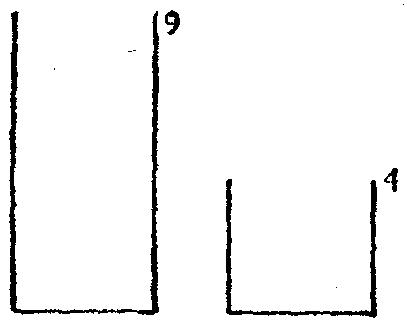

重新审查解答后，我们对所得结果可能格外坚信。我们必须向初学者指出：这
种格外坚信是有价值的，两个证明总比一个证明强：
有备无患。
(5)我们这里并没有举尽所有的关于解题的谚语。尚有许多谚语也可以摘
引，但它们几乎没有什么新内容而只不过是以上谚语的改头换面。至于解题过
程的某些更系统，更复杂的方面则难以用“谚语的智慧”加以概括。
作者常常模仿谚语的特殊措辞(这并不容易)尝试描述解题过程的更系统的
方面。下面是几条自拟的“综合”谚语，它们描述稍为复杂一点的情况：
方法取决于目的。
你的五个最好的朋友是：什么，为什么，哪里，何时与怎样。当你需要忠告
时，你去问它们而不要问别人。
不要相信一切，也不要怀疑一切。
当你找到第一个蘑菇(或作出第一个发现)后，要环顾四周，因为它们总是
成堆生长的。
67．倒着干
如果我们希望理解人类的行为，我们应当把它与动物的行为相比较。动物
也“有问题”，也“解决问题”。最近十年来，实验心理学在探索各种动物“解
决问题”的行为方面已经作出了重要的进展。我们这里不能讨论这些研究，但
我们只大致描述一个简单而又有启发性的实验，并且我们的描述将作为一种分
析方法——“倒着干”方法的说明。顺便提一下，这种方法在本书的其他地方
也讨论过，其重要描述要归功于帕扑斯(见“帕扑斯”一节)。
(1) 让我们试找出下列数学游戏题的答案：有两个容器：小桶的容量是4夸
脱，大桶的容量是9夸脱，怎样才能从河中恰好打上6夸脱水呢?
让我们弄消楚所给定的工具，我们必须用这两个容器来工作(已知的是什
么?)。我们设想两个圆柱形容器，其底相同，其高为9与4，见图24。如果桶的
侧面有刻度，它们是些等间隔的水平横线，用它们可读出水平面的高度，则这
个问题容易解答。热而这里并没有这样的刻度，所以我们离解答还远。
图24
目前我们还不知道怎样去量出恰好6夸脱；但我们是否能测量其他某个东
西?(如果你不能解决所提问题，首先去解决某个与此有关的问题。你能从已知
数据导出来些有用的东西吗?)让我们做点事，让我们稍微干点什么试试，我们